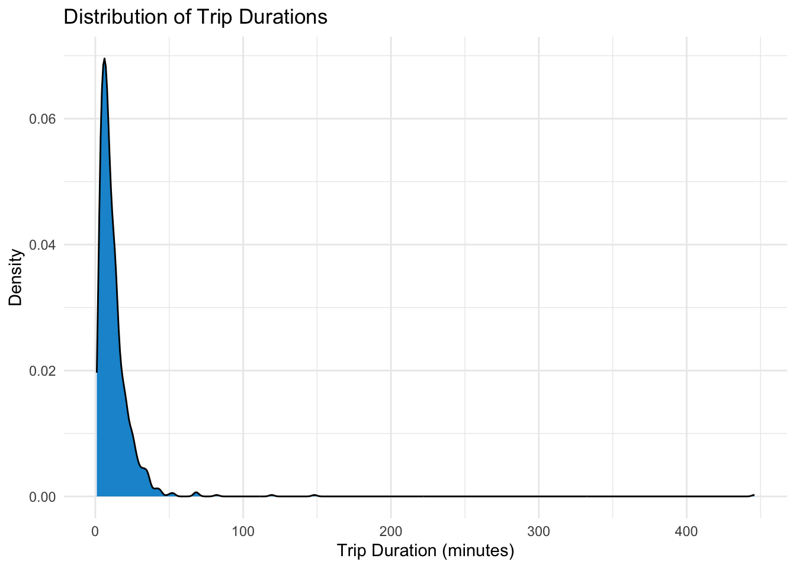
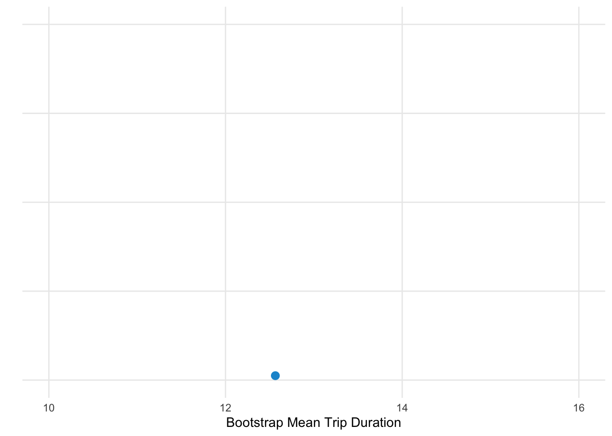

library(conflicted)
library(tidyverse)
library(janitor)
library(broom)
library(skimr)
library(psych)
library(infer)
conflicts_prefer(dplyr::filter)
options(
scipen = 999,
pillar.sigfig = 10
)Final Project: Citi Bikes Sample
Introduction
The Citi Bike program is a bike-sharing system in New York City that allows users to rent bicycles for short trips around the city. The program has become increasingly popular since its launch in 2013, with millions of rides taken each year. In this project, we will analyze Citi Bike trip data for 2018 to gain insights into usage patterns, popular routes, and user profiles.
Data Source
The data for this analysis is sourced from the Citi Bike system’s public data repository, which provides monthly trip data in CSV format. The dataset includes information such as trip duration, start and end stations, user type (subscriber or customer), and timestamps for each trip.
Data Dictionary
starttime: Timestamp for when the trip started (datetime)stoptime: Timestamp for when the trip ended (datetime)tripduration: Duration of the trip in seconds (numeric)tripduration_min: Duration of the trip in minutes (numeric, calculated from tripduration)day_of_week: Day of the week the trip started (ordered factor: Mon-Sun)weekday_weekend: Whether the trip occurred on a weekday or weekend (factor)hour_of_day: Hour of day when the trip started, 0-23 (integer)time_of_day: Time period classification (ordered factor: Morning, Late Morning, Afternoon, Evening, Night)start_station_id: Unique identifier for the starting station (character)start_station_name: Name of the starting station (character)start_station_latitude: Latitude coordinate of the starting station (numeric)start_station_longitude: Longitude coordinate of the starting station (numeric)end_station_id: Unique identifier for the ending station (character)end_station_name: Name of the ending station (character)end_station_latitude: Latitude coordinate of the ending station (numeric)end_station_longitude: Longitude coordinate of the ending station (numeric)round_trip: Whether the trip started and ended at the same station (logical: TRUE/FALSE)bikeid: Unique identifier for the bike used (character)usertype: Type of user (factor: Subscriber or Customer)birth_year: Self-reported birth year of the user (numeric)approx_age: Approximate age of the user in 2018 (numeric, calculated as 2018 - birth_year)gender: Self-reported gender of the user (factor: Male, Female, Unknown)
Data Loading and Preparation
Load required packages
Load the full transformed Citi Bike 2018 data (for reference)
citibike_2018 <- readRDS("data/combined/citibike_2018_transformed.rds")Load the Citi Bike 2018 data sample
citibike_sample_2018 <-
readRDS("data/sample/citibike_2018_sample_1000.rds")
glimpse(citibike_sample_2018)Rows: 1,000
Columns: 22
$ starttime <dttm> 2018-05-01 10:42:28, 2018-11-15 09:42:47, 201…
$ stoptime <dttm> 2018-05-01 10:59:42, 2018-11-15 09:45:34, 201…
$ tripduration <dbl> 1034, 166, 308, 926, 802, 647, 754, 344, 489, …
$ tripduration_min <dbl> 17.233333, 2.766667, 5.133333, 15.433333, 13.3…
$ day_of_week <ord> Tue, Thu, Sun, Fri, Mon, Thu, Tue, Mon, Tue, S…
$ weekday_weekend <fct> Weekday, Weekday, Weekend, Weekday, Weekday, W…
$ hour_of_day <int> 10, 9, 10, 8, 18, 12, 13, 16, 18, 16, 20, 10, …
$ time_of_day <ord> Late Morning, Late Morning, Late Morning, Morn…
$ start_station_id <chr> "361", "3415", "3107", "356", "3369", "3316", …
$ start_station_name <chr> "Allen St & Hester St", "Prospect Pl & 6 Ave",…
$ start_station_latitude <dbl> 40.71606, 40.67933, 40.72312, 40.71623, 40.772…
$ start_station_longitude <dbl> -73.99191, -73.97520, -73.95212, -73.98261, -7…
$ end_station_id <chr> "167", "353", "3106", "3489", "2022", "3172", …
$ end_station_name <chr> "E 39 St & 3 Ave", "S Portland Ave & Hanson Pl…
$ end_station_latitude <dbl> 40.74890, 40.68540, 40.72325, 40.71070, 40.759…
$ end_station_longitude <dbl> -73.97605, -73.97431, -73.94308, -74.00354, -7…
$ round_trip <lgl> FALSE, FALSE, FALSE, FALSE, FALSE, FALSE, FALS…
$ bikeid <chr> "30037", "28431", "20049", "17765", "34334", "…
$ usertype <fct> Subscriber, Subscriber, Subscriber, Subscriber…
$ birth_year <dbl> 1985, 1991, 1975, 1994, 1993, 1968, 1981, 1961…
$ approx_age <dbl> 33, 27, 43, 24, 25, 50, 37, 57, 30, 32, 27, 35…
$ gender <fct> Male, Male, Male, Female, Female, Male, Male, …Exploratory data analysis
Summary statistics
citibike_sample_2018 |>
summary() starttime stoptime tripduration
Min. :2018-01-02 13:48:28 Min. :2018-01-02 14:00:20 Min. : 61.0
1st Qu.:2018-05-01 18:20:57 1st Qu.:2018-05-01 18:59:39 1st Qu.: 336.8
Median :2018-07-20 13:34:32 Median :2018-07-20 13:37:57 Median : 553.0
Mean :2018-07-14 12:57:25 Mean :2018-07-14 13:09:54 Mean : 748.6
3rd Qu.:2018-09-28 13:17:00 3rd Qu.:2018-09-28 13:34:09 3rd Qu.: 900.5
Max. :2018-12-31 11:22:22 Max. :2018-12-31 11:23:55 Max. :26751.0
tripduration_min day_of_week weekday_weekend hour_of_day
Min. : 1.017 Sun:110 Weekday:771 Min. : 0.00
1st Qu.: 5.612 Mon:141 Weekend:229 1st Qu.:10.00
Median : 9.217 Tue:158 Median :15.00
Mean : 12.477 Wed:157 Mean :13.99
3rd Qu.: 15.008 Thu:158 3rd Qu.:18.00
Max. :445.850 Fri:157 Max. :23.00
Sat:119
time_of_day start_station_id start_station_name
Morning :175 Length:1000 Length:1000
Late Morning:139 Class :character Class :character
Afternoon :298 Mode :character Mode :character
Evening :294
Night : 94
start_station_latitude start_station_longitude end_station_id
Min. :40.66 Min. :-74.02 Length:1000
1st Qu.:40.72 1st Qu.:-73.99 Class :character
Median :40.74 Median :-73.99 Mode :character
Mean :40.74 Mean :-73.98
3rd Qu.:40.76 3rd Qu.:-73.97
Max. :40.81 Max. :-73.91
end_station_name end_station_latitude end_station_longitude round_trip
Length:1000 Min. :40.66 Min. :-74.02 Mode :logical
Class :character 1st Qu.:40.72 1st Qu.:-73.99 FALSE:985
Mode :character Median :40.74 Median :-73.99 TRUE :15
Mean :40.74 Mean :-73.98
3rd Qu.:40.76 3rd Qu.:-73.97
Max. :40.81 Max. :-73.91
bikeid usertype birth_year approx_age
Length:1000 Customer : 45 Min. :1941 Min. :17.00
Class :character Subscriber:955 1st Qu.:1971 1st Qu.:28.00
Mode :character Median :1983 Median :35.00
Mean :1980 Mean :38.04
3rd Qu.:1990 3rd Qu.:47.00
Max. :2001 Max. :77.00
gender
Unknown: 0
Male :763
Female :237
citibike_sample_2018 |>
skim()| Name | citibike_sample_2018 |
| Number of rows | 1000 |
| Number of columns | 22 |
| _______________________ | |
| Column type frequency: | |
| character | 5 |
| factor | 5 |
| logical | 1 |
| numeric | 9 |
| POSIXct | 2 |
| ________________________ | |
| Group variables | None |
Variable type: character
| skim_variable | n_missing | complete_rate | min | max | empty | n_unique | whitespace |
|---|---|---|---|---|---|---|---|
| start_station_id | 0 | 1 | 2 | 4 | 0 | 458 | 0 |
| start_station_name | 0 | 1 | 12 | 45 | 0 | 457 | 0 |
| end_station_id | 0 | 1 | 2 | 4 | 0 | 457 | 0 |
| end_station_name | 0 | 1 | 9 | 45 | 0 | 456 | 0 |
| bikeid | 0 | 1 | 5 | 5 | 0 | 956 | 0 |
Variable type: factor
| skim_variable | n_missing | complete_rate | ordered | n_unique | top_counts |
|---|---|---|---|---|---|
| day_of_week | 0 | 1 | TRUE | 7 | Tue: 158, Thu: 158, Wed: 157, Fri: 157 |
| weekday_weekend | 0 | 1 | FALSE | 2 | Wee: 771, Wee: 229 |
| time_of_day | 0 | 1 | TRUE | 5 | Aft: 298, Eve: 294, Mor: 175, Lat: 139 |
| usertype | 0 | 1 | FALSE | 2 | Sub: 955, Cus: 45 |
| gender | 0 | 1 | FALSE | 2 | Mal: 763, Fem: 237, Unk: 0 |
Variable type: logical
| skim_variable | n_missing | complete_rate | mean | count |
|---|---|---|---|---|
| round_trip | 0 | 1 | 0.01 | FAL: 985, TRU: 15 |
Variable type: numeric
| skim_variable | n_missing | complete_rate | mean | sd | p0 | p25 | p50 | p75 | p100 | hist |
|---|---|---|---|---|---|---|---|---|---|---|
| tripduration | 0 | 1 | 748.61 | 1042.63 | 61.00 | 336.75 | 553.00 | 900.50 | 26751.00 | ▇▁▁▁▁ |
| tripduration_min | 0 | 1 | 12.48 | 17.38 | 1.02 | 5.61 | 9.22 | 15.01 | 445.85 | ▇▁▁▁▁ |
| hour_of_day | 0 | 1 | 13.99 | 4.91 | 0.00 | 10.00 | 15.00 | 18.00 | 23.00 | ▁▅▃▇▃ |
| start_station_latitude | 0 | 1 | 40.74 | 0.03 | 40.66 | 40.72 | 40.74 | 40.76 | 40.81 | ▂▃▇▅▁ |
| start_station_longitude | 0 | 1 | -73.98 | 0.02 | -74.02 | -73.99 | -73.99 | -73.97 | -73.91 | ▃▇▃▂▁ |
| end_station_latitude | 0 | 1 | 40.74 | 0.03 | 40.66 | 40.72 | 40.74 | 40.76 | 40.81 | ▂▃▇▅▁ |
| end_station_longitude | 0 | 1 | -73.98 | 0.02 | -74.02 | -73.99 | -73.99 | -73.97 | -73.91 | ▃▇▃▁▁ |
| birth_year | 0 | 1 | 1979.96 | 12.01 | 1941.00 | 1971.00 | 1983.00 | 1990.00 | 2001.00 | ▁▃▅▇▅ |
| approx_age | 0 | 1 | 38.04 | 12.01 | 17.00 | 28.00 | 35.00 | 47.00 | 77.00 | ▇▇▅▃▁ |
Variable type: POSIXct
| skim_variable | n_missing | complete_rate | min | max | median | n_unique |
|---|---|---|---|---|---|---|
| starttime | 0 | 1 | 2018-01-02 13:48:28 | 2018-12-31 11:22:22 | 2018-07-20 13:34:32 | 1000 |
| stoptime | 0 | 1 | 2018-01-02 14:00:20 | 2018-12-31 11:23:55 | 2018-07-20 13:37:57 | 1000 |
Trip duration analysis
citibike_sample_2018 |>
select(tripduration_min) |>
describe() vars n mean sd median trimmed mad min max range
tripduration_min 1 1000 12.48 17.38 9.22 10.41 6.52 1.02 445.85 444.83
skew kurtosis se
tripduration_min 16.52 389.84 0.55citibike_sample_2018 |>
ggplot(aes(x = tripduration_min)) +
geom_density() +
labs(
title = "Distribution of Trip Durations",
x = "Trip Duration (minutes)",
y = "Density"
) +
theme_minimal()
citibike_sample_2018 |>
ggplot(aes(x = tripduration_min)) +
geom_density() +
labs(
title = "Distribution of Trip Durations",
x = "Trip Duration (minutes)",
y = "Density"
) +
xlim(0, 60) +
theme_minimal()
Bootstrap confidence interval for mean trip duration
set.seed(557)
citibike_sample_2018 |>
slice_sample(n = nrow(citibike_sample_2018), replace = TRUE) |>
pull(tripduration_min) |>
mean(na.rm = TRUE)[1] 12.56418set.seed(557)
boot_dist_1 <- citibike_sample_2018 |>
specify(response = tripduration_min) |>
generate(reps = 1, type = "bootstrap") |>
calculate(stat = "mean")
print(boot_dist_1)Response: tripduration_min (numeric)
# A tibble: 1 × 1
stat
<dbl>
1 12.56418333boot_dist_1 |>
ggplot(aes(x = stat)) +
geom_dotplot(binwidth = 0.1) +
theme_minimal() +
xlim(10, 16) +
labs(x = "Bootstrap Mean Trip Duration", y = "") +
theme(axis.text.y = element_blank(),
axis.ticks.y = element_blank())
set.seed(557)
boot_dist_10 <- citibike_sample_2018 |>
specify(response = tripduration_min) |>
generate(reps = 10, type = "bootstrap") |>
calculate(stat = "mean")
print(boot_dist_10)Response: tripduration_min (numeric)
# A tibble: 10 × 2
replicate stat
<int> <dbl>
1 1 12.56418333
2 2 12.6653
3 3 12.63868333
4 4 12.27995
5 5 13.2369
6 6 12.38261667
7 7 12.23016667
8 8 11.41803333
9 9 12.26963333
10 10 12.17411667boot_dist_10 |>
ggplot(aes(x = stat)) +
geom_dotplot(binwidth = 0.1) +
theme_minimal() +
xlim(10, 16) +
labs(x = "Bootstrap Mean Trip Duration", y = "") +
theme(axis.text.y = element_blank(),
axis.ticks.y = element_blank())
set.seed(557)
boot_dist_1000 <- citibike_sample_2018 |>
specify(response = tripduration_min) |>
generate(reps = 1000, type = "bootstrap") |>
calculate(stat = "mean")
boot_dist_1000 |>
ggplot(aes(x = stat)) +
geom_dotplot(binwidth = 0.1, dotsize = .45) +
theme_minimal() +
xlim(10, 16) +
labs(x = "Bootstrap Mean Trip Duration", y = "") +
theme(axis.text.y = element_blank(),
axis.ticks.y = element_blank())
boot_ci <- boot_dist_1000 |>
get_confidence_interval(level = 0.95, type = "percentile")
print(boot_ci)# A tibble: 1 × 2
lower_ci upper_ci
<dbl> <dbl>
1 11.53287042 13.66787833boot_dist_1000 |>
visualize(bins = 100) +
shade_confidence_interval(endpoints = boot_ci) +
theme_minimal() +
xlim(10, 16) +
labs(x = "Bootstrap Mean Trip Duration", y = "") +
theme(axis.text.y = element_blank(),
axis.ticks.y = element_blank())
Mathematical confidence interval for mean trip duration
citibike_sample_2018 |>
select(tripduration_min) |>
t.test(conf.level = 0.95) |>
tidy()# A tibble: 1 × 8
estimate statistic p.value parameter conf.low conf.high method
<dbl> <dbl> <dbl> <dbl> <dbl> <dbl> <chr>
1 12.47675 22.70511189 2.347020611e-92 999 11.39841822 13.55508178 One Sa…
# ℹ 1 more variable: alternative <chr>Comparison of bootstrap and mathematical confidence intervals
pop_mean <- mean(citibike_2018$tripduration_min, na.rm = TRUE)
boot_mean <- mean(boot_dist_1000$stat)
t_result <- citibike_sample_2018 |>
select(tripduration_min) |>
t.test(conf.level = 0.95) |>
tidy()
tibble(
Method = c("Population (True)", "Bootstrap", "T-test"),
Mean = c(pop_mean, boot_mean, t_result$estimate),
Lower_CI = c(NA, boot_ci$lower_ci, t_result$conf.low),
Upper_CI = c(NA, boot_ci$upper_ci, t_result$conf.high)
)# A tibble: 3 × 4
Method Mean Lower_CI Upper_CI
<chr> <dbl> <dbl> <dbl>
1 Population (True) 13.21229398 NA NA
2 Bootstrap 12.46565138 11.53287042 13.66787833
3 T-test 12.47675 11.39841822 13.55508178Bivariate analysis: Trip duration by user type
citibike_sample_2018 |>
ggplot(aes(x = tripduration_min, fill = usertype)) +
geom_density(alpha = 0.5) +
labs(
title = "Distribution of Trip Durations by User Type",
x = "Trip Duration (minutes)",
y = "Density",
fill = "User Type"
) +
xlim(0, 60) +
theme_minimal()